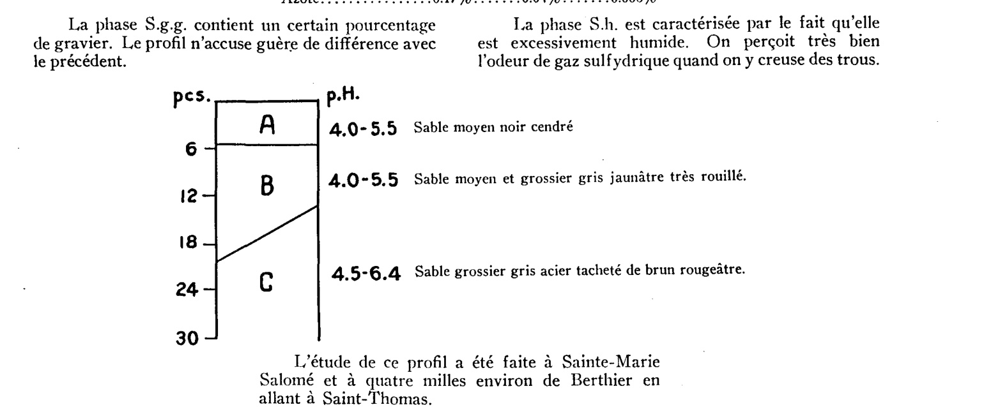
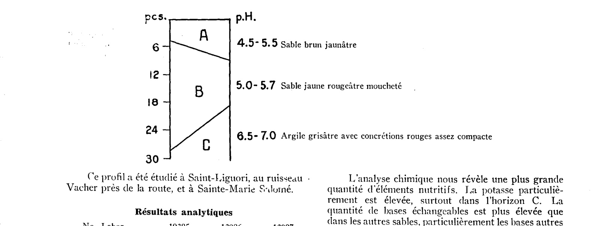
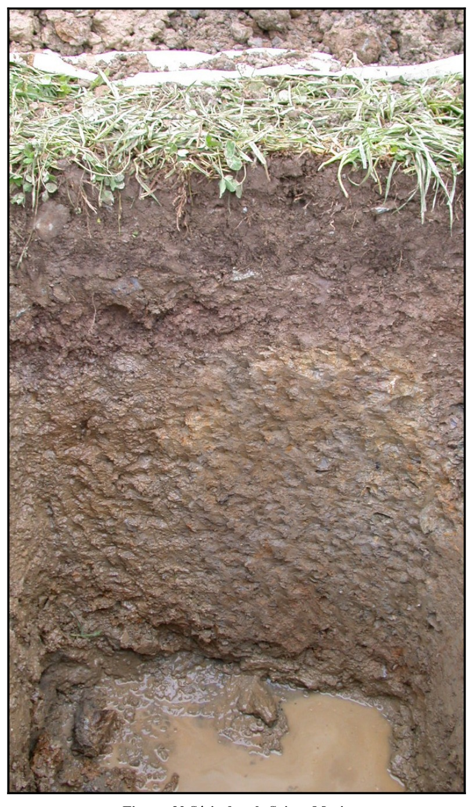

Identification & Caractéristiques Générales
Les sols de la série Sainte-Marie se sont développés sur un till morainique glaciaire dense et compact, caractéristique des secteurs du plateau appalachien et des vallées des Monts Notre-Dame. Ce matériau parental se manifeste géomorphologiquement sous forme de terrains plats, faiblement ondulés ou en position de bas de pente et de replats topographiques, avec des déclivités variant généralement de 2 % à 20 %. Le profil pédologique s'établit sur des accumulations minérales plus ou moins profondes, souvent influencées par la proximité de la roche en place ou d'une assise morainique basale fortement consolidée qui restreint la percolation verticale des eaux.
Sur le plan morphologique et hydropédologique, la série se caractérise par un drainage naturel variant d'imparfait à mauvais et par une perméabilité lente à modérée. Un phénomène de gleyification prononcé confère au profil des teintes nettement grisâtres ou olivâtres, ainsi que des marbrures distinctes et marquées dans les horizons sous-jacents, témoignant de conditions d'oxydoréduction fluctuantes. La nappe phréatique est fréquemment apparente à moins d'un mètre de profondeur, provoquant des suintements d'eau au contact de la couche compacte du till. L'horizon de surface (Ap), d'une épaisseur moyenne de 16 cm, présente une texture de loam sableux à loam, une structure granulaire fine à moyenne faiblement à modérément développée, une teneur en matières organiques modérée à élevée, ainsi qu'une pierrosité inhérente variant de 5 % à 20 en volume (graviers, cailloux et pierres). La réaction du sol est fortement à très fortement acide.
Les aptitudes agronomiques de la série Sainte-Marie se destinent principalement à la production de cultures fourragères et de grandes cultures, bien que les contraintes inhérentes au milieu nécessitent des interventions correctives rigoureuses. Les limitations majeures incluent l'excès d'eau temporaire ou permanent, la faible perméabilité et l'acidité prononcée. La mise en valeur agricole requiert obligatoirement l'implantation d'un réseau de drainage souterrain adéquat et le creusage de fossés disposés en travers des pentes pour intercepter les suintements. De plus, des apports réguliers de amendements calciques et magnésiens (pierre à chaux) sont indispensables pour neutraliser l'acidité, tandis qu'une fertilisation minérale balancée permet d'optimiser et de soutenir la fertilité des cultures en place.
Caractères Distinctifs & Morphologie Génétique (Comté de Dorchester — Page 74)
- Topographie : ondulée à fortement ondulée
- Drainage : imparfait
- Pierrosité : modérément pierreux — 1
- Grand-groupe génétique : podzol
- Degré d'érosion : léger (W1)
- Classes d'utilisation (C) : 3W à 5P (Q) 3d à 4c
- Association géographique : Leeds, Brompton
- Végétation naturelle : érables, sapins, plaines, ormes, hêtres
Classification Taxonomique & Environnement Pédologique
| Ordre Pédologique | Gleysolique |
|---|---|
| Grand Groupe (SCSS) | Gleysol humique |
| Sous-Groupe Taxonomique | Gleysol orthique |
| Famille Pédologique | Loameuse, mixte, neutre, douce et subaquique |
| Mode de Dépôt Parental | Dépôts alluvionnaires ou glacio-marins de la vallée du Saint-Laurent |
| Classe de Drainage Naturel | Imparfait à mauvais |
| Régime Thermique & Humidité | Mésique / Perhumide à subhumide |
Description Morphologique du Profil Type
Séquences génétiques des horizons pédologiques caractérisant le profil type représentatif de la série Sainte-Marie :
Profil cultivé (agricole) — Comté de Dorchester
✓ Source : Comté de Dorchester — Page 75Couleur Munsell : 10YR 4/2, 10YR 4/4
Structure & Consistance : Granulaire
Description morphologique : Loam graveleux brun-gris foncé (10YR 4/2) à brun-jaune foncé (10YR 4/4); structure granulaire; friable; pH: 4.8 — 5.1.
Couleur Munsell : 10YR 6/2, 5YR 6/2
Structure & Consistance : Polyédrique à granulaire
Description morphologique : Loam graveleux, gris-brun clair (10YR 6/2) à gris-rose (5YR 6/2); sans structure; friable; pH: 4.2 — 4.4.
Couleur Munsell : 10YR 6/3 (matrice), 10YR 4/4 (marbrures)
Structure & Consistance : Polyédrique
Description morphologique : Loam graveleux à loam sablo-graveleux brun pâle (10YR 6/3) avec mouchetures de couleur brun-jaune foncé (10YR 4/4); structure polyédrique; ferme; pH: 4.5 — 4.8.
Couleur Munsell : 10YR 5/6 (matrice), 5YR 5/8 (marbrures)
Structure & Consistance : Massive
Description morphologique : Loam graveleux à loam sablo-graveleux brun-jaune (10YR 5/6) avec mouchetures de couleur rouge-jaune (5YR 5/8); structure massive; compact; pH: 5.7 — 6.1
Couleur Munsell : 2.5Y 4/4 (matrice), 10YR 6/3 (marbrures)
Structure & Consistance : Massive
Description morphologique : Loam sablo-graveleux olive (2.5Y 4/4) avec mouchetures de couleur brun pâle (10YR 6/3); structure massive; compact; pH: 5.9 — 6.3.
Profil forestier (sous boisé) — Comté de Frontenac
✓ Source : Comté de Frontenac — Page 58Couleur Munsell : 10YR 2/1
Structure & Consistance : Polyédrique à granulaire
Description morphologique : Horizon organique noir (10 YR 2/1 h), noir (10 YR 2/1 s); granulaire, très fine, faible; très friable; racines très abondantes, de toutes les grosses, horizontales, obliques; limite abrupte, régulière; épaisseur de 4 à 10 cm; extrêmement acide.
Couleur Munsell : 5Y 4.5/1 (matrice), 5Y 6.5/1 (marbrures)
Structure & Consistance : Polyédrique à granulaire
Description morphologique : Loam gris foncé à gris (5 Y 4.5/1 h), gris clair (5 Y 6.5/1 s); marbrures fréquentes, fines, marquées, brun olive (10 YR 4/6 h), brun vif (7.5 YR 4/6 s); polyédrique subangulaire, très fine, faible; très friable; racines peu abondantes, fines, très fines, horizontales, obliques; fragments grossiers, à graviers anguleux; 20% en volume; limite nette, onduleuse; épaisseur de 3 à 10 cm; très fortement acide.
Couleur Munsell : 5Y 5/2 (matrice), 5Y 6.5/2 (marbrures)
Structure & Consistance : Polyédrique à granulaire
Description morphologique : Loam sableux gris olive (5 Y 5/2 h); gris olive clair à gris clair (5 Y 6.5/2 s); marbrures fréquentes, fines, marquées, brun jaune (10 YR 5/6 h), brun jaune (10 YR 5/6 s); polyédrique subangulaire, fine, modérée; très friable; racines peu abondantes, fines, très fines, horizontales, obliques; fragments grossiers, à graviers anguleux, caillouteux, 30% en volume; limite graduelle, onduleuse; épaisseur de 14 à 23 cm; très fortement acide.
Couleur Munsell : 5Y 4.5/1 (matrice), 5Y 6.5/1 (marbrures)
Structure & Consistance : Polyédrique à granulaire
Description morphologique : Loam sableux gris foncé à gris (5 Y 4.5/1 h), gris clair (5 Y 6.5/1 s); marbrures fréquentes, fines, moyennes, marquées, brun jaune foncé (10 YR 4/4 h), brun jaune (10 YR 5/6 s); polyédrique subangulaire, fine, faible; friable; fragments grossiers, à graviers caillouteux, anguleux, pierreux, 30% en volume; fortement acide.
Profil cultivé (agricole) — Comté de Mégantic
✓ Source : Comté de Mégantic — Page 76Couleur Munsell : 10YR 3/2, 5Y 6/2
Structure & Consistance : Polyédrique à granulaire
Description morphologique : Loam sableux brun gris très foncé (10 YR 3/2 h), gris brun clair (2,5 Y 6/2 s); granulaire, grossière, faible à sans structure; friable; racines très abondantes, fines, très fines et microscopiques, verticales; limite abrupte, régulière; épaisseur de 5 à 8 cm; moyennement acide.
Couleur Munsell : 5Y 4/2 (matrice), 5Y 7/2 (marbrures)
Structure & Consistance : Polyédrique à granulaire
Description morphologique : Loam brun gris foncé (2,5 Y 4/2 h), gris clair (5 Y 7/2 s); marbrures nombreuses, distinctes et marquées, grises (5 Y 5/1 h), brun jaune foncé (10 YR 4/4 h); sans structure; très friable; racines très abondantes, fines, très fines et microscopiques, verticales; limite graduelle, onduleuse; épaisseur de 20 à 36 cm; faiblement acide.
Couleur Munsell : 5Y 5/2 (matrice), 5Y 7/2 (marbrures)
Structure & Consistance : Polyédrique à granulaire
Description morphologique : Loam sableux fin graveleux gris olive (5 Y 5/2 h), gris clair (5 Y 7/2 s); marbrures nombreuses, moyennes, marquées, rouge jaune (5 Y 5/8 h); polyédrique subangulaire, grossière, faible à modérée; ferme; limite graduelle, onduleuse; épaisseur de 24 à 32 cm; neutre.
Couleur Munsell : 5Y 4/3 (matrice), 5Y 6/1 (marbrures)
Structure & Consistance : Polyédrique à granulaire
Description morphologique : Loam graveleux olive (5 Y 4/3 h), gris (5 Y 6/1 s); marbrures fréquentes, fines, marquées, brunes (7,5 YR 5/4 h); polyédrique subangulaire, fine à moyenne, faible à modérée; ferme; neutre.
Profil cultivé (agricole) — Comté de Arthabaska
✓ Source : Comté de Arthabaska — Page 49Couleur Munsell : 10YR 4/2, 10YR 6/1
Structure & Consistance : Polyédrique à granulaire
Description morphologique : Loam sableux fin brun-gris foncé (10 YR 4/2 h), gris (10 YR 6/1 s); granulaire, très fine à fine, très faible; très friable; racines très abondantes, de toutes les grosseur, non orientées; fragments grossiers, graveleux et caillouteux, environ 10%; limite abrupte, ondulée; épaisseur de 5 à 12 cm; extrêmement acide.
Couleur Munsell : 5Y 6/1 (matrice), 5YR 5/6 (marbrures)
Structure & Consistance : Polyédrique à granulaire
Description morphologique : Loam sableux fin gris (5 Y 6/1 h), gris clair à blanc (7,5 YR 7,5/1 s); mouchetures assez nombreuses, moyennes et grandes, distinctes et très marquées, brun vif (7,5 YR 5/6 h) et olive clair (2,5 Y 5/4 h); massive sans structure; friable; racines abondantes, fines, très fines et microscopiques, horizontales et obliques; fragments grossiers, graveleux et caillouteux, environ 15%; limite nette, interrompue; épaisseur de 0 à 10 cm; extrêmement acide.
Couleur Munsell : 5Y 5/1 (matrice), 10YR 7/1 (marbrures)
Structure & Consistance : Polyédrique à granulaire
Description morphologique : Loam sableux fin gris (5 Y 5/1 h), gris clair (10 YR 7/1 s); mouchetures nombreuses, grandes très marquées, brun-gris (10 YR 5/2 h); massive, sans structure, ferme; racines abondantes, très fines et microscopiques, horizontales et obliques; fragments grossiers, graveleux et caillouteux, environ 15%; limite nette, ondulée; épaisseur de 10 à 20 cm; extrêmement acide.
Profil cultivé (agricole) — Comté de Wolfe
✓ Source : Comté de Wolfe — Page 24Couleur Munsell : 10YR 4/2, 2.5Y 6.5/2
Structure & Consistance : Polyédrique à granulaire
Description morphologique : Loam brun gris foncé (10 YR 4/2 h), gris brun clair à gris clair (2.5 Y 6.5/2 s) ; granulaire, fine, faible à modérée ; très friable ; racines très abondantes, de toutes les grosseur, non orientées ; fragments grossiers, à gravier anguleux, 20% en volume ; limite nette, régulière ; épaisseur de 10 à 13 cm ; fortement acide.
Couleur Munsell : 2.5Y 4/4 (matrice), 2.5Y 7/2 (marbrures)
Structure & Consistance : Polyédrique à granulaire
Description morphologique : Loam sableux fin brun olive (2.5 Y 4/4 h), gris clair (2.5 Y 7/2 s) ; quelques marbrures, petites, faibles ; polyédrique subangulaire, fine à moyenne, faible à modérée ; friable ; peu de racines, fines, très fines et microracines, verticales et obliques ; fragments grossiers, à gravier anguleux, caillouteux, 30% en volume ; limite nette, onduleuse ; épaisseur de 25 à 32 cm ; moyennement acide.
Couleur Munsell : 5Y 6/1 (matrice), 10YR 5/4 (marbrures)
Structure & Consistance : Polyédrique à granulaire
Description morphologique : Loam sableux fin gris, à gris olive (5 Y 6/1 s) ; marbrures nombreuses, petites et moyennes, distinctes et très marquées, brun jaune (10 YR 5/4 h) ; polyédrique subangulaire, fine à moyenne, modérée ; ferme ; fragments grossiers à gravier anguleux, caillouteux et pierreux, 30% en volume ; faiblement acide.
Profil forestier (sous boisé) — Comté de Beauce
✓ Source : Comté de Beauce — Page 43Couleur Munsell : 10YR 2/1
Structure & Consistance : Polyédrique à granulaire
Description morphologique : Horizon organique noir (10 YR 2/1 h), noir (10 YR 2/1 s); granulaire, très fine, faible; très friable; racines très abondantes, de toutes les grossesurs, horizontales, obliques; limite abrupte, régulière; épaisseur de 4 à 10 cm; extrêmement acide.
Couleur Munsell : 10YR 4/6 (matrice), 5YR 4/6 (marbrures)
Structure & Consistance : Polyédrique à granulaire
Description morphologique : Loam gris foncé à gris (5 Y 4,5/1 h), gris clair (5 Y 6,5/1 s); marbrures fréquentes, fines, marquées, brun olive (10 YR 4/6 h), brun vif (7,5 YR 4/6 s); polyédrique subangulaire, très fine, faible; très friable; racines peu abondantes, fines, très fines, horizontales, obliques; fragments grossiers, à graviers anguleux; 20 % en volume; limite nette, onduleuse; épaisseur de 3 à 10 cm; très fortement acide.
Couleur Munsell : 5Y 5/2 (matrice), 10YR 5/6 (marbrures)
Structure & Consistance : Polyédrique à granulaire
Description morphologique : Loam sableux gris olive (5 Y 5/2 h); gris olive clair à gris clair (5 Y 6,5/2 s); marbrures fréquentes, fines, marquées, brun jaune (10 YR 5/6 h), brun jaune (10 YR 5/6 s); polyédrique subangulaire, fine, modérée; très friable; racines peu abondantes, fines, très fines, horizontales, obliques; fragments grossiers, à graviers anguleux, caillouteux, 30 % en volume; limite graduelle, onduleuse; épaisseur de 14 à 23 cm; très fortement acide.
Couleur Munsell : 10YR 4/4 (matrice), 10YR 5/6 (marbrures)
Structure & Consistance : Polyédrique à granulaire
Description morphologique : Loam sableux gris foncé à gris (5 Y 4,5/1 h), gris clair (5 Y 6,5/1 s); marbrures fréquentes, fines, moyennes, marquées, brun jaune foncé (10 YR 4/4 h), brun jaune (10 YR 5/6 s); polyédrique subangulaire, fine, faible; friable; fragments grossiers, à graviers caillouteux, anguleux, pierreux, 30 % en volume; fortement acide.
Profils Photographiques & Planches de Terrain
Documents iconographiques, figures pédologiques et coupes de terrain documentées dans les mémoires d'inventaire pour de la série Sainte-Marie :






Propriétés Physico-Chimiques & Analyses de Laboratoire
| Col 1 | Col 2 | Col 3 | Col 4 | Col 5 | Col 6 | Col 7 | Col 8 | Col 9 | Col 10 | Col 11 |
|---|---|---|---|---|---|---|---|---|---|---|
| Ap | 0-4/0-10 | 53.6 | 22.4 | 24.0 | 4.8 | 10.37 | 0.42 | 4.67 | 30.67 | 15.22 |
| Ae | 4-7/10-17 | 39.6 | 38.4 | 22.0 | 4.4 | 1.50 | 0.11 | 0.92 | 11.92 | 7.71 |
| Bg | 7-11/17-28 | 45.6 | 32.4 | 22.0 | 4.8 | 0.56 | 0.08 | 0.77 | 4.77 | 16.14 |
| C1g | 11-17/28-43 | 45.6 | 32.4 | 22.0 | 5.7 | 0.36 | 0.06 | 0.84 | 2.84 | 29.57 |
| C2g | 17+/43+ | 63.6 | 23.4 | 14.0 | 5.9 | 0.28 | 0.03 | 0.73 | 1.73 | 42.19 |
Particularités Régionales, Phases & Variantes Pédologiques
Déclinaisons régionales, faciès texturaux, phases d'érosion ou de pierrosité et variantes cartographiées par étude pour de la série Sainte-Marie :
| Étude Régionale | Symbole | Appellation / Phase / Variante | Différenciation avec la série type (Analyse pédologique) |
|---|---|---|---|
| Comté de Dorchester | LOA |
Loam graveleux SAINTE-MARIE (Mai) 69,248 acres | Modalité modale de référence (type de base de la série). |
| Comté de Frontenac | LOA |
d) Série Sainte-Marie | Conforme à la série type de référence (caractéristiques texturales et drainage identiques). |
| Comté de Wolfe | LOA |
d) Série Sainte-Marie | Conforme à la série type de référence (caractéristiques texturales et drainage identiques). |
| Comté de Mégantic | LOA |
Série Sainte - Marie | Conforme à la série type de référence (caractéristiques texturales et drainage identiques). |
| Comté de Arthabaska | LOA |
Série SAINTE-MARIE | Conforme à la série type de référence (caractéristiques texturales et drainage identiques). |
| Comté de Beauce | LOA |
d) Série SAINTE-MARIE (29,305 ha défriché à 40 %) | Conforme à la série type de référence (caractéristiques texturales et drainage identiques). |
Distribution Pédo-Paysagère (Couverture PPS)
Série historique ou locale sans polygone vectoriel individualisé autonome dans la couche Couverture_pps 2026.
Aptitudes Agronomiques, Hydropédologie & Conservation des Sols
Indicateurs Hydropédologiques & Vulnérabilité à l'Érosion (BDHP 2026)
Interprétation BDHP : Potentiel de ruissellement modérément élevé. Faible taux d'infiltration, présence d'horizons ralentissant le drainage descendant.
Classement selon l'Inventaire des Terres du Canada (ITC / CLI) : Classe 2w.
- Potentiel agricole : Terroir adapté aux cultures régionales selon la texture dominante et la régie de drainage.
- Contraintes majeures : Imparfait à mauvais. Risque d'engorgement temporaire ou d'excès d'eau printanier.
- Gestion & Aménagement : Drainage souterrain ou superficiel préconisé sur les terres planes. Chaulage et apport organique régulier selon les bilans agronomiques.
- Cultures adaptées : Grandes cultures (maïs, soya, céréales), prairies fourragères et cultures maraîchères selon le contexte géomorphologique.